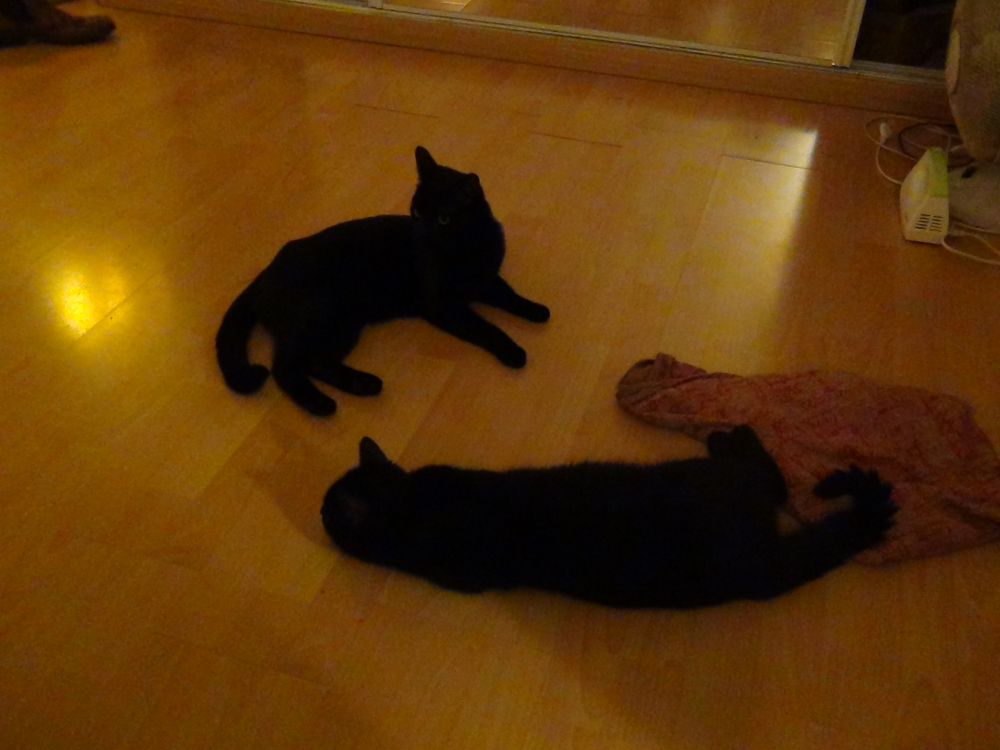

Les petits chats
Qui est le cuicui ?

Réponse 1: Le petit chat de gauche
Réponse 2: Le petit chat de droite
Lien vers les indices
Bientôt plus de quizz sur les petits chats pour toujours plus de rigolade entre amis
bisou